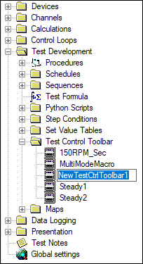

Test Control Toolbar¶
Overview¶
The Test Control Toolbar is a section of iTest Console that can be used as the primary way to launch and control tests. The toolbar allows a selection from a number of different test types and each of them can have a set of pre-defined and custom buttons that can be used to control the running test.
The Test Control Toolbar Editor allows you to assign a name to a test, select the Test Type (Procedure, Sequence or Schedule), select the specific instance to run, and configure additional toolbar buttons to control the test. All of the test types have their own set of buttons hard coded, but there is also an option to add customized buttons for each Test Type.
For example, the VCL Procedure test type has four buttons hard coded – Start, Stop, Pause and Resume. However, there are several blank buttons available that can be configured specific to your test, as shown in the example below:
VCL Procedure Test Type
You can add new toolbars by right-clicking on the Test Control Toolbar folder and selecting the New TestCtrlToolbar option. When you double-click on a toolbar you created, you will be prompted to associate that toolbar with a specific test. The editor that appears will then allow you to configure the buttons for that test type.
When the selection is a procedure, an additional text editor will be available to describe the test. This text will then appear on the user interface when the user selects that test at runtime.
|
 |
NOTE: |
HTML can also be used in procedure text to format the output. |
Configuration¶
The Test Manager editor for test control toolbars is shown above. In addition to the individual button definitions, there are also the following fields:
- Test Type - This is either a procedure or a schedule type. For some iTest systems, a sequence may also be an option. Selecting either procedure or schedule will change the selections available for the next item.
- Test - Defines the actual test to run when selecting the start button. For procedures, this will be a list of procedures. For schedules, it will be a list of all schedules in the solution.
Pre-Defined Button Types¶
Common Buttons¶
- Start - Each type of test has a start button. This button is grayed out in iTest Console if flgSysTestRunning is non-zero, which indicates that a test is already running. If the test type is "Schedule," then this button will trigger the procedure defined in the powertek.ini setting: ScheduleStartScript.
- Stop - Each type also has a stop button. If the test type is "Schedule," then this button will trigger the procedure defined in the powertek.ini setting: ScheduleStopScript.
Schedule Buttons¶
- Reload - This button is only active, if the Schedule has been "unlocked." This will save any changes made to the schedule to disk, update the schedule loaded in memory to match the schedule on disk, and will trigger the procedure defined in the powertek.ini setting: ScheduleReloadScript.
- Lock/Unlock - This button can be used to lock the schedule so that nothing can be accidentally typed into the cells while the schedule is running.
Procedure Buttons¶
- Pause - This will suspend the main procedure that was started with the start button.
- Resume - This will cause the main procedure that was started with the start button to resume execution.
User-Defined Buttons¶
The remaining buttons can be customized to have any behavior and appearance that you want.
Test Control Toolbar Button Setup
- Name/Tooltip - gives the name in the Test Manager editor and will provide a tooltip at runtime.
- Icon File - browse to an image file to display for this button's icon.
- Mailslot - mailslot address to send a message to.
- Message - the actual command or message to send to that address.
- Delete This Button checkbox - button configuration is removed on save if this is checked.
Adding a New Toolbar¶
To add a new toolbar and associate it with a specific test, complete the following procedure:
- Expand the Test Development folder from the Test Manager Tree and right-click on the Test Control Toolbar folder. Select the New TestCtrlToolbar option. A new toolbar (most likely named New TestCtrlToolbar1) will appear under the tree.
New Toolbar

- Double-click on the toolbar you just added. The following editor will be displayed:
Toolbar Editor
- Select the type of test that this toolbar will be associated with in the Test Type field. The default buttons (the ones that will be displayed in runtime) will change slightly depending on which Test Type you select.
- Now select the specific test name from the Test field.
- At this point, you can customize button(s) specific to this test by clicking on the gray buttons. Configure each in the following dialog:
Test Control Toolbar Button Setup
- Once you have finished configuring your toolbar, right click on the generic toolbar name in the Tree and select the Rename option. Type in a unique name for the toolbar.
- Click File > Save.
Runtime Toolbar¶
At runtime, selecting a schedule test will bring up the iTest schedule viewer with the selected schedule showing. Clicking Start will then start cycling through the rows of the schedule to run the test.
The test control interface in iTest Console will appear similar to the following:
Test Control Interface
In the AutomationPanel, the toolbar is called Test Monitor and appears as follows:
Test Monitor
|
|
NOTE: |
Only one schedule test can run at a time that uses the iTest schedule interface. You can run other schedules in the background but you will not be able to monitor the progress with the iTest Schedule Viewer. |
Selecting a procedure will bring up an HTML view of the text you typed in when you defined the procedure test in Test Manager. This is typically not very useful visually, but it serves as a placeholder to make sure that only one procedure test can run at a time from the Test Control Toolbar. If another one is selected, iTest will ask if you want to shut down the running procedure test first.